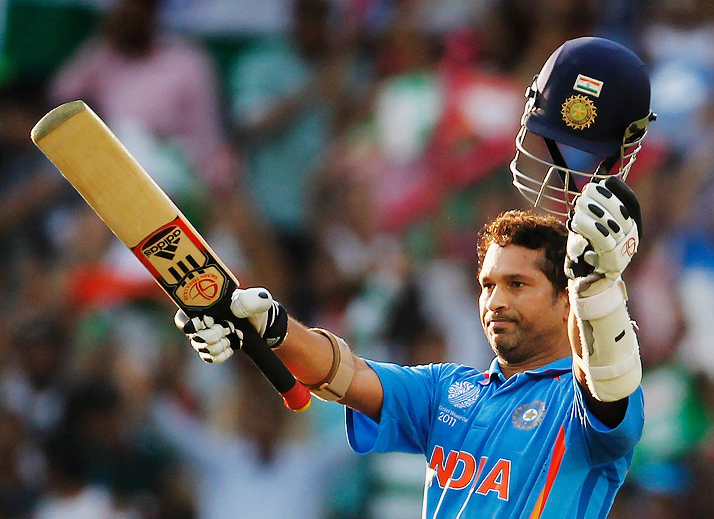

{{firstName | uppercase}}
{{lastName | uppercase}}
"I hate losing and cricket being my first love, once I enter the ground it's a different zone altogether and that hunger for
winning is always there."
ABOUT
Sachin Ramesh Tendulkar is a former Indian cricketer
and a former captain, regarded as one of the greatest batsmen of all time.
The highest run scorer of all time in International cricket, Tendulkar took up cricket at the age of eleven, made his Test
debut on 15 November 1989 against Pakistan in Karachi at the age of sixteen, and went on to represent Mumbai domestically
and India internationally for close to twenty-four years.
He is the only player to have scored one hundred international centuries, the first batsman to score a double century in
a One Day International, the holder of the record for the most number of runs in both ODI and Test cricket, and the only
player to complete more than 30,000 runs in international cricket.
